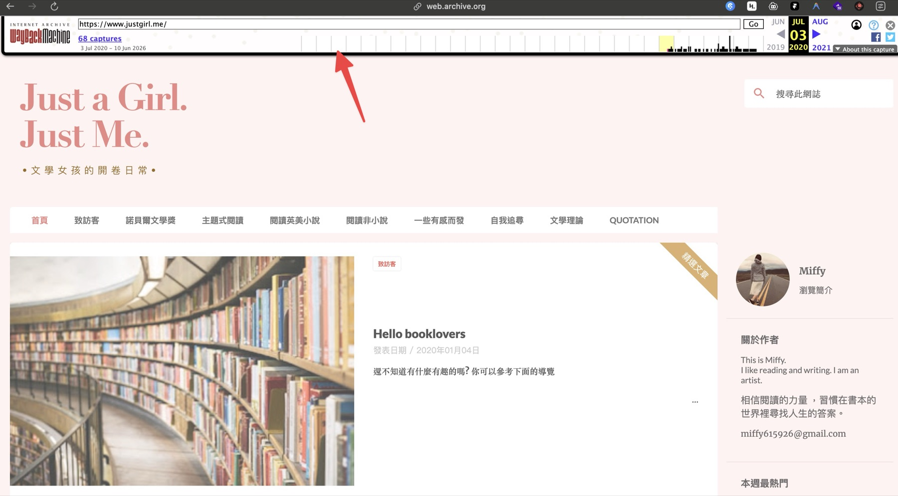
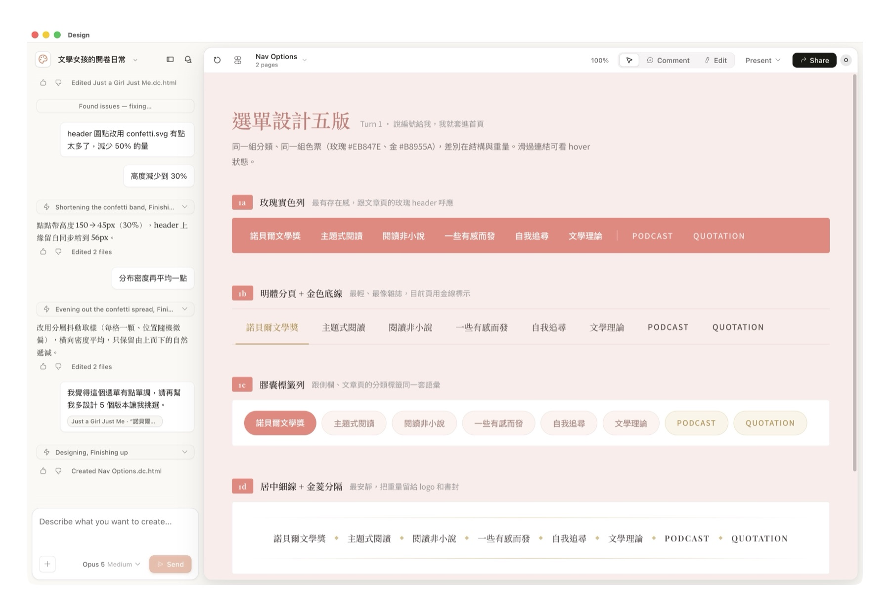

從停權到 Discord。
點任一單元直接跳過去，或按 → 從封面開始。
從停權到
Discord。
一個 13 年的 Blogger 被無預警停權，
我們花一個下午把它搬進 WordPress。
Oberon Lai
想點創意科技 Codotx 創辦人
軟體工程師 · AI 開發顧問
2013 投入 WordPress 開發，從佈景主題到客製化網站
2021 創立想點創意科技，推出 OrderNotify for WooCommerce
2026 推出 OrderChatz AI 客服方案，開設 AI 開發顧問服務
一夜之間，全部鎖住。
三段路。
停權那天
早上一封信，13 年的東西全部看不到。
(Just a Girl. <br>Just Me.)
你好：
日前你的網誌遭人檢舉。經審查後，我們判定這個網誌違反社群規範，並已停用相關網址，讀者將無法看到這個網誌：https://www.justgirl.me
你的內容違反了我們的「惡意軟體和類似惡意內容」政策。
如果認為這項處置有誤，可以提出申訴，但必須在接下來的 90 天內提出。
13 年的讀者，
當天全部斷線。
搜尋結果還在，點進來就是這一頁。
我們已收到你的申訴。
通常 10 個工作天內會通知結果，
但部分案件可能耗時更長。
官方罐頭訊息，沒有窗口、沒有進度、沒有人可以問。
除了等，
什麼都不能做。
因為沒有人知道，資料到底救不救得回來。
決定搬家
與其等一個不知道會不會來的回覆。
不等了，
直接搬。
平台是別人的，內容才是自己的。
搬到 WordPress，之後誰都關不掉。
還好，
業主有備份。
這件事能不能救，從停權那天之前就決定了。
固定匯出 XML 備份
Blogger 後台的完整備份檔，一週一份，存在自己的電腦裡。
文章原稿留在 iPad
寫作在 iPad 上完成再貼上去，所以最新的內容不只存在 Blogger。
先把樣子
復刻回來
搬家的第一步，我從設計面開始。
網站已經
打不開了，
怎麼照著做？

去 Web Archive
把它撈回來。
找到還活著的快照，
把每一種版型都截圖下來。
四種版型截好，整個站的設計就盤點完了。
Claude Design
截圖丟進去，它認得出這個網站長什麼樣子。
從截圖擷取
設計元素
顏色、字型、按鈕樣式一次抓出來，
整理成一套設計系統再開始設計。

生出來的元件，
可以自己手改。
只是要改幾個字，還要回頭叫 AI 改，
反而更慢。
同一個區塊，
一次給你五版
舊架構撐不住新需求的地方，
讓它多做幾版，我挑。

響應式自動化
手機、平板、桌機的間距與字級，照設計規範自動推算，不用手調斷點。
無障礙即時檢測
對比度、字級是否符合 WCAG，設計當下就檢查，並直接給修正建議。
設計即程式碼
元件可以直接輸出成 CSS / Tailwind / React，設計稿與成品不會走鐘。
蓋一個新家
佈景主題與本機開發環境。
用自己整理過的
那一套來長。
github.com/oberonlai/everything-wp
因為之後
要讓業主自己改。
版型交出去以後，
他在後台就能動內容，不用回來找我。
ValetPress
開機的時候 PHP、Nginx、MySQL 就已經在背景跑了，不用每次重啟。
不必每個站都養一個容器，硬碟空間省很多。
oberonlai.blog/valetpress-setup
10 秒，
一個乾淨的站。
用這份設計，
做成 WordPress 區塊佈景主題。
貼進 Claude Code，剩下的就是等它跑完。
一萬篇
搬進來
還有兩個一定會踩到的坑。
請它讀 8 個 XML，
自己搬進去。
那個 ?m=1
Blogger 拿它當手機版參數；
WordPress 拿它當彙整月份篩選。
直接帶進來，會變成一整片 404。
/2019/05/post.html?m=1
↓ 301
新網址
/2019/05/post.html
請 AI 針對這個參數另外做一條轉址規則。
HTML 區塊
要補註解標記
Blogger 的內容是純 HTML，
少了區塊編輯器的註解，
後台就打不開那篇文章。
<div class="post">…</div>
<!-- /wp:html -->
轉換的時候就要一起處理，一萬篇不會想再跑第二次。
推上線
主機、自動部署，還有一個伏筆。
InstaWP
本來是給開發者用的 WordPress 服務，
後來也開始賣主機。
$2 / 月
不綁正式網址，純測試站就夠用。
$5 / 月
可以綁自己的網址，主機額度也比較多。
它有 CLI，
AI 可以自己開站。
底層已經針對 WordPress 做過相容，
Agent 直接用指令開測試站、同步網站。
後台可以直接
開一個 MCP。
拿到一條網址，就能接上各家模型的桌面應用程式。
更新完不是說「應該好了」，是真的去點一遍。
CDN 是 Bunny，
最近的機房在新加坡。
台灣連過去，體感還可以。
在 Discord
改網站
交付之後，業主才是每天要用的人。
業主習慣的是
Blogger 的後台。
WordPress 後台對他來說，選單太多、名詞太多。
那就
不要進後台。
改成他每天都在用的那個聊天視窗。
instawp 讀取首頁區塊 → 找到標題kiro-discord-bot
github.com/nczz/kiro-discord-bot
權限可以
切到「頻道」。
還記得 InstaWP 那條 MCP 網址嗎？
把它只掛在這個客戶的頻道上。
這個網站，只有他碰得到。
收尾
整件事，就這五步。
全部加起來，一個下午。
然後，
隔天早上——
Hello,
We have re-evaluated your blog against Blogger Community Guidelines. Upon review, the blog has been reinstated. You may access the blog at https://www.justgirl.me.
Sincerely,
The Blogger Team
平台可以把網站還你，
但不會把主控權還你。
下一次還會不會來，不是你能決定的。
想學
AI 開發嗎？
今天講的這一整套流程，
我可以一對一帶你做一遍。
內容跟時間都可以談 · 加 LINE 直接問我